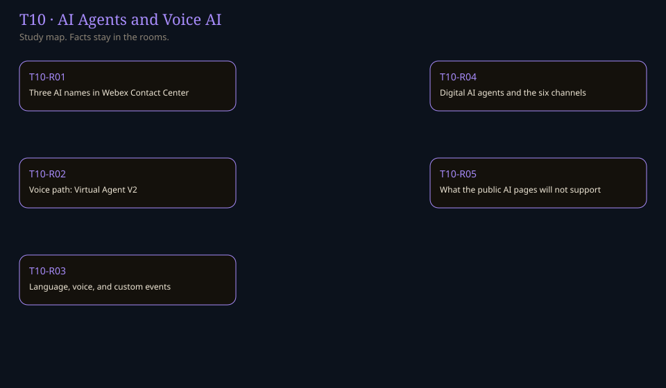

5 rooms on this track · 78 Canon rooms
Home / T10

No title in this track matches.
| Code | Room | Status |
|---|---|---|
| T10-R01 | Three AI names in Webex Contact Center Assistant, Studio agents, and Virtual Agent–Voice are different surfaces. | written |
| T10-R02 | Voice path: Virtual Agent V2 Entry point, flow, published agent, and the three outcomes. | written |
| T10-R03 | Language, voice, and custom events Global variables, the error path, and voice-only events. | written |
| T10-R04 | Digital AI agents and the six channels Webex Connect’s AI Agent node, and the channels the article names. | written |
| T10-R05 | What the public AI pages will not support Limits, a different third-party article, and claims this lab will not make. | written |
Sources and go deeper
Checked links were opened this month. A confirm row has no address because that page was not opened.
- Wikipedia Workforce management (Wikipedia) last checked 2026-10
- Wikipedia Call centre (Wikipedia) last checked 2026-10
- Vendor doc Basic WFM and QM on Webex WFO (nmzg380) last checked 2026-10
- Vendor doc Webex WFO feature-specific SKUs (py6u9h) last checked 2026-10
- Vendor doc Enable AI Quality Management (6m6r3fb) last checked 2026-10
- Vendor doc Get started with AI Quality Management (nvtdfxk) last checked 2026-10
- Vendor doc Analyzer reports for AI Quality Management (n4jc67x) last checked 2026-10
- Vendor doc Sentiment analysis in AI Quality Management (voh2oeb) last checked 2026-10
- Vendor doc Coaching insights (i8lp6i) last checked 2026-10
- Vendor doc Cisco AI Assistant (nvvv1zb) last checked 2026-10
- Vendor doc Use AI agents for customer interactions (s0qro1) last checked 2026-10
- Vendor doc AI Agent Studio administration guide (ncs9r37) last checked 2026-10
- Vendor doc Configure Virtual Agent-Voice (n6gaghu) last checked 2026-10
- Vendor doc Unified CM to Webex Calling introduction (nbedetf) last checked 2026-10
- Vendor doc Dedicated Instance contact center integration (nmhk7ve) last checked 2026-10
- Vendor doc Migrate Unified CCX to Webex Contact Center (0hd75db) last checked 2026-10
- Vendor doc Webex CCE tenant data migration tool (n2puc5z) last checked 2026-10
- Vendor doc Webex Contact Center architecture (utqcm7) last checked 2026-10
- Vendor doc Get started with Local Gateway (t9xctu) last checked 2026-10
- DevDocs Bring your own virtual agent last checked 2026-10
- Sibling lab UC Lab last checked 2026-10
- Sibling lab AI Lab last checked 2026-10
- Sibling lab Amazon Connect Lab last checked 2026-10
- Sibling lab Microsoft Voice Lab last checked 2026-10
- Sibling lab Five9 Lab last checked 2026-10
- Sibling lab Genesys Cloud Lab last checked 2026-10
- Sibling lab NICE CXone Lab last checked 2026-10
- Sibling lab SIP Universe last checked 2026-10
- Brand CypherMonkey Labs on GitHub last checked 2026-10
- Confirm Wikipedia title Cisco Unified Communications Manager (the request returned 404) confirm
- Confirm wfohelp.com pages named by article nmzg380 confirm
- Confirm Collaboration ordering guides page named by article nmzg380 confirm
- Confirm Supported languages and voices article named by article s0qro1 confirm
- Confirm Webex WFO user-guide PDF for New WFM confirm
sources.json for this page.